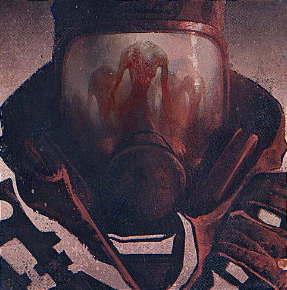
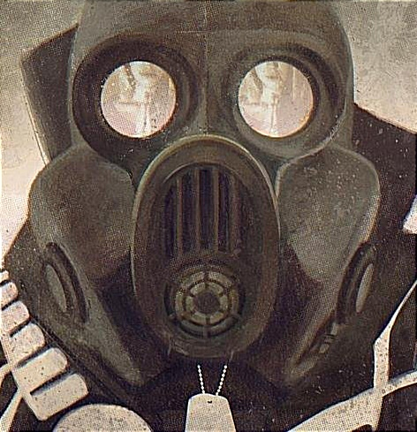
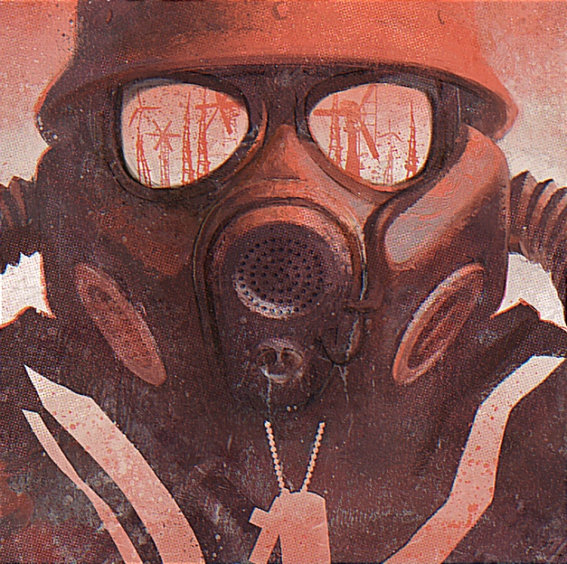

Oskar Właszczuk
Metro - post apokaliptyczna wizja moskiewskiego podziemia

Metro - świat przedstawiony
Sześć minut - tyle czasu, od momentu
ogłoszenia
alarmu
nuklearnego mieli mieszkańcy Moskwy na
ratunek. Zwykłym cywilom nie były dane luksusy schronów, przeciw bombowych, czy tajne bazy rządowe,
musieli
skorzystać z miejsca z którym obcowali na codzień, z którego dojeżdzali do pracy, czy supermarketów.
Musieli
uciec do moskiewskiego metra. W wyniku konfliktu światowego, mocarstwa naszych państw doprowadziły
do
Wielkiej
Wojny, która obróciła znany nam świat w pustynię nuklearną. Od tego momentu minęło 20 lat.
Zapuszkowane
parenaście metrów pod ziemią, szczątki cywilizacji ludzkiej, każdego dnia toczą walkę, czy to z
promieniowaniem, z nowymi mieszkańcami powierzhni, czy pomiędzy sobą.
 Część z nich zatraciła już odruchy ludzkie
na
rzecz tych zwierzęcych, odrzucili moralność i rozsądek, kierując się pierwotnym instynktem.
Piędziesiąt
tysięcy
ludzi - tyle stanowi
liczba ludności, prawdopodobnie ostatniej ludzkiej ostoi na Ziemii, która kurczowo i desperacko
trzyma
się
zasady, by przetrwać. Za wszęlką cenę przetrwać. Żyją na herbacie z grzybów i wychudzonej
trzodzie,
a
tylko
ci
najodważniejsi wyruszają na powierzhnię, przynosząc artefakty przeszłości.
Część z nich zatraciła już odruchy ludzkie
na
rzecz tych zwierzęcych, odrzucili moralność i rozsądek, kierując się pierwotnym instynktem.
Piędziesiąt
tysięcy
ludzi - tyle stanowi
liczba ludności, prawdopodobnie ostatniej ludzkiej ostoi na Ziemii, która kurczowo i desperacko
trzyma
się
zasady, by przetrwać. Za wszęlką cenę przetrwać. Żyją na herbacie z grzybów i wychudzonej
trzodzie,
a
tylko
ci
najodważniejsi wyruszają na powierzhnię, przynosząc artefakty przeszłości.
Książki z serii Metro
Metro 2033

Moskwa 2033.
W wyniku konfliktu atomowego, znany nam świat uległ zagładzie. Od tych wydarzeń minęło ponad 20 lat.
Artem, młody mężczyzna z WOGN-u, najdalej wysuniętej na północ zamieszkałej stacji dostaje zadanie: musi przedostać się do cenrtum metra, legendarnej stacji Polis, aby przekazać informację o nowym, śmiertelnym zagrożeniu. Od powodzenia jego misji zależy przyszłość nie tylko jego rodzimego WOGN-u, ale może i całego moskiewskiego metra, które stanowi prawdopodobnie ostatnią ludzką ostoję życia.
Metro 2034

Moskwa 2034.
Od pamiętnych wydarzeń, które początek i finał miały na stacji WOGN, minął niespełna rok. Na drugim krańcu metra moskiewskiego mieszkańcy Sewastopolskiej toczą walkę o przetrwanie z nowymi formami życia, które wdzierają się z powierzchni do podziemnego świata ludzi. Los stacji i jej mieszkańców zależy od dostaw amunicji, które muszą regularnie przybywać, a te nagle ustają. Karawany giną bez wieści, a łączność się urywa...
Metro 2035

Moskwa 2035.
Po ostatniej Wielkiej Wojnie, ludzkość straciła wszystko. Światowy konflikt zmiótł nas z powierzhni Ziemii, obradzając wszystkie ludzkie osiągnięcia cywilizacji w radioaktywny pył. Przeżyli tylko ci, którzy po usłyszeniu syren alarmowych zdołali dobiec do moskiewskiego metra. Otwarte przestrzenie zastąpili ciasnymi tunelami, pańśtwa obrócili w stacje, a życie ich stało się ciągłą walką o przetrwanie. Radia i komunikacje milczą. Nie ma pewności, że ktokolwiek tam, na górze jeszcze przeżył.